Gérez une ou plusieurs agences de voyage dans Odoo 18 : vente de billets au guichet avec QR code, voyages et remplissage des bus, flotte et maintenance, clôture de caisse, facturation et paiements Odoo intégrés, rapports PDF et tableau de bord en temps réel.
Toutes les captures proviennent du module installé sur Odoo 18, avec un exemple réaliste : Mboa Voyages exploite trois agences (Douala, Yaoundé, Bafoussam) avec leurs guichetières, chauffeurs, bus et lignes.
1 · Agences2 · Équipe3 · Lignes et tarifs4 · Flotte5 · Voyages6 · Vente au guichet7 · Facture et billet8 · Caisse9 · Maintenance10 · Rapports
ÉTAPE 1
Créez vos agences
Dans Agences, enregistrez chaque agence avec son logo, son adresse, son téléphone, son e-mail et son numéro d’immatriculation : ces informations apparaissent sur tous les billets et rapports. Choisissez si les ventes sont encaissées à la confirmation (comptant) ou laissées à crédit, ainsi que les journaux de vente et d’encaissement.
Une première agence est créée automatiquement à l’installation, au nom de votre société : il suffit de la renommer.
Onglet Billet : message personnalisé en bas de chaque billet. Onglet Accès : limitez l’agence à certains utilisateurs.
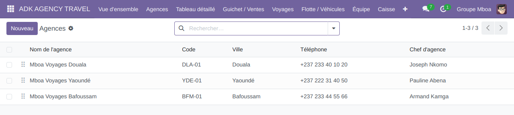
Les trois agences du réseau, chacune avec son chef d’agence
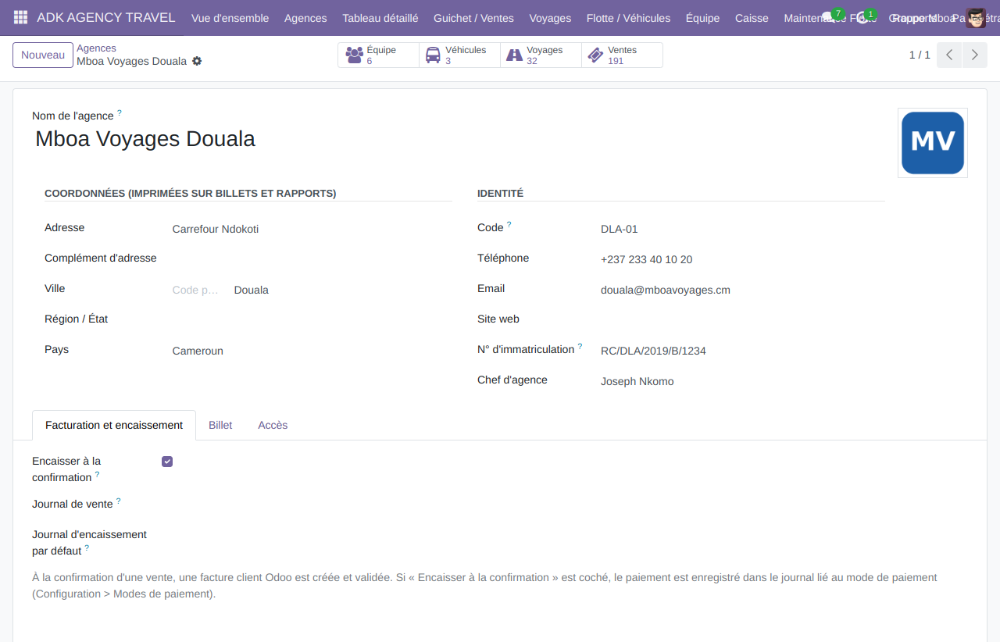
Fiche d’une agence : identité, coordonnées imprimées sur les billets, facturation
ÉTAPE 2
Constituez votre équipe
Dans Équipe, ajoutez le chef d’agence, les guichetières et guichetiers, les chauffeurs et le reste du personnel. Pour chaque chauffeur, renseignez le numéro de permis et sa date d’expiration.
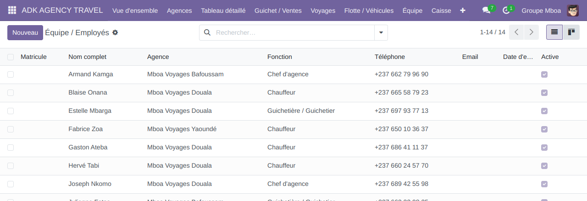
Équipe des trois agences : chefs d’agence, guichetières, chauffeurs
ÉTAPE 3
Définissez vos lignes, classes et modes de paiement
Dans Paramétrage, créez les lignes (départ, arrivée, distance, durée), les classes de voyage (Éco, VIP… avec leur tarif de base, les kilos de bagages gratuits et le prix du supplément) et les modes de paiement (espèces, carte, Orange Money, MTN Mobile Money…), chacun relié à un journal Odoo.
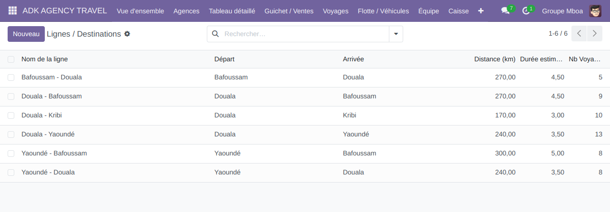
Lignes et destinations
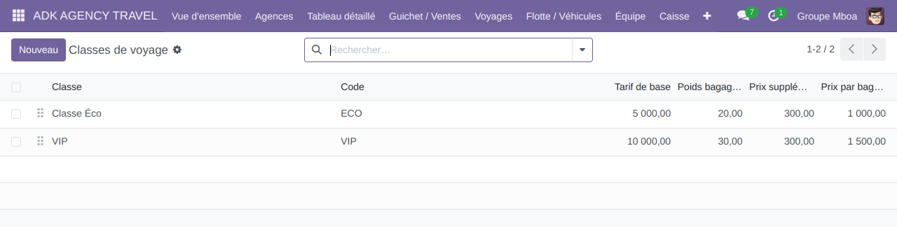
Classes de voyage : tarif et franchise bagages
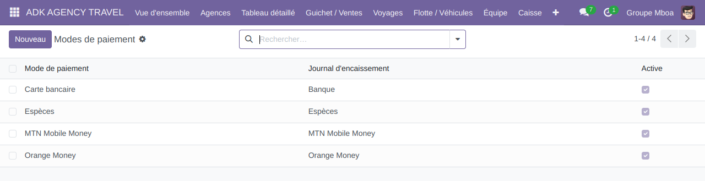
Modes de paiement reliés aux journaux comptables
ÉTAPE 4
Enregistrez votre flotte
Dans Flotte / Véhicules, ajoutez chaque véhicule : immatriculation, type, marque, capacité et chauffeur habituel. Le bouton Générer les sièges crée automatiquement le plan de places numérotées. La vue Kanban classe les véhicules par état : disponible, en route, en maintenance ou en panne.
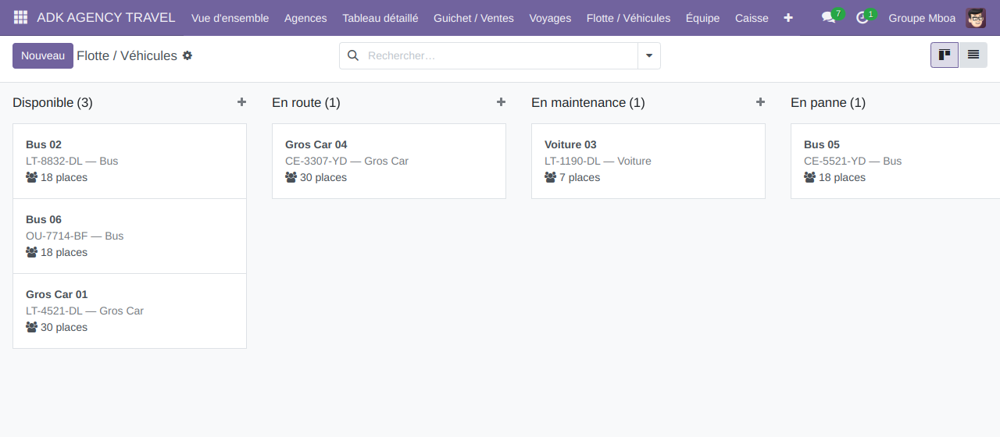
Flotte classée par état
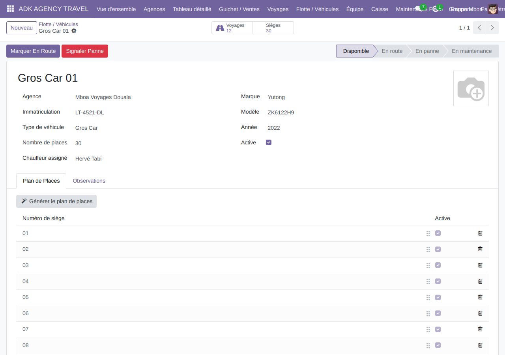
Fiche d’un véhicule avec son plan de sièges
ÉTAPE 5
Programmez vos voyages
Dans Voyages, associez une ligne, un véhicule, un chauffeur et une date de départ. Le module calcule en temps réel les places réservées, les places disponibles, le taux de remplissage et la recette totale. Un voyage suit le cycle Planifié → Confirmé → En route → Terminé.
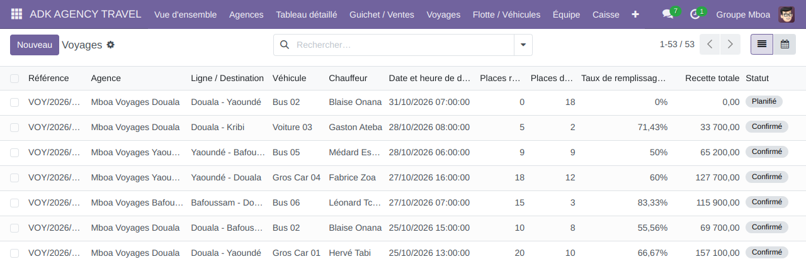
Tous les voyages avec remplissage et recettes
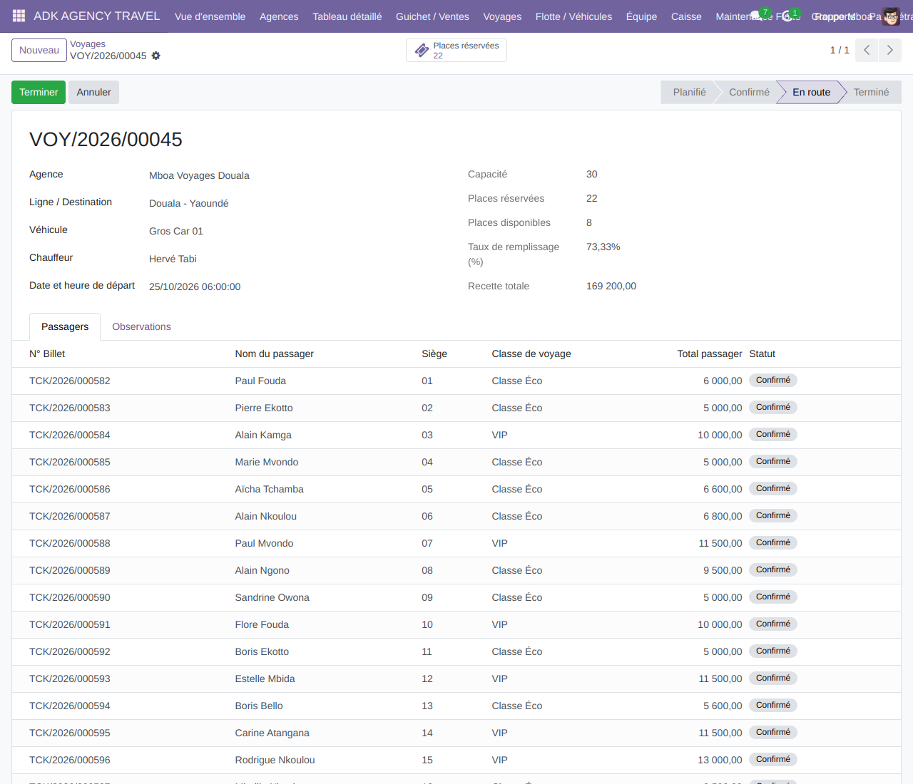
Voyage en cours : passagers, sièges, classes et tarifs
ÉTAPE 6
Vendez au guichet
Dans Guichet / Ventes, la guichetière saisit le client, choisit le voyage et ajoute un ou plusieurs passagers : siège, classe, nombre de bagages et poids. Le tarif et le supplément bagages se calculent automatiquement, et le mode de paiement est choisi en un clic.
Un même siège ne peut pas être vendu deux fois sur un voyage.
Le bouton Recalculer les tarifs met à jour une vente si les prix changent.
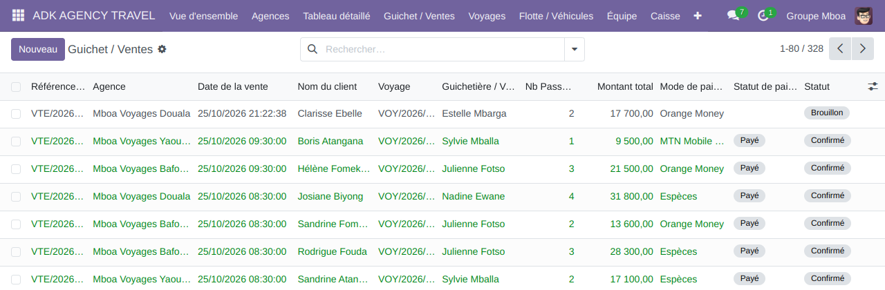
Toutes les ventes au guichet
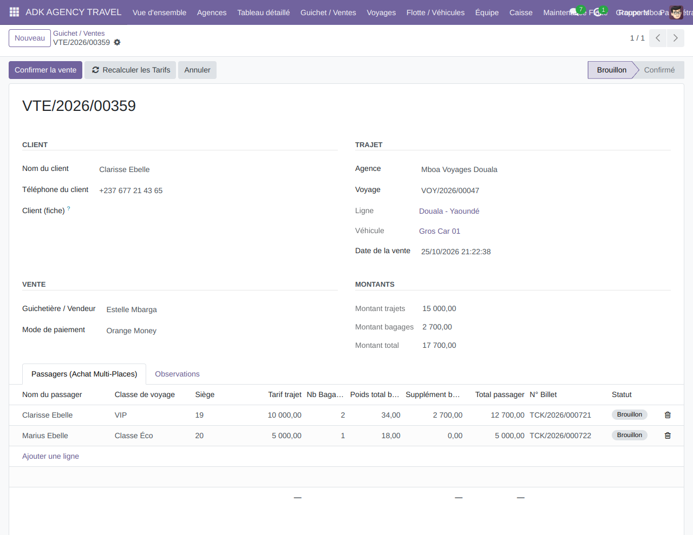
Nouvelle vente en brouillon : deux passagers, classes VIP et Éco, bagages
ÉTAPE 7
Confirmez : facture, paiement et billets avec QR code
À la confirmation, le module crée la facture client Odoo, enregistre le paiement dans le journal du mode choisi et numérote les billets. Un ruban PAYÉ s’affiche sur la vente. Le bouton Imprimer les billets remet à chaque passager un billet au nom de l’agence, avec un QR code de vérification.
Chaque guichetier travaille sans droits comptables : la facture et le paiement sont générés pour lui.
Pour un client à crédit, désactivez simplement l’encaissement à la confirmation sur l’agence.
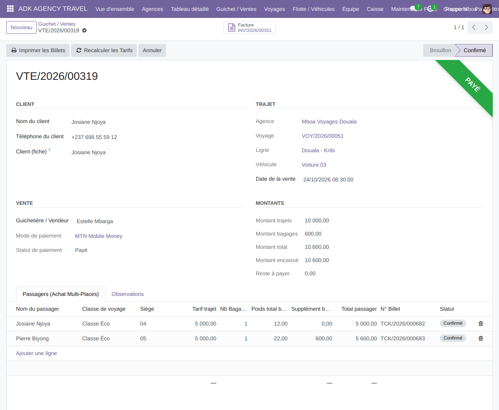
Vente confirmée et payée : facture et paiement générés automatiquement
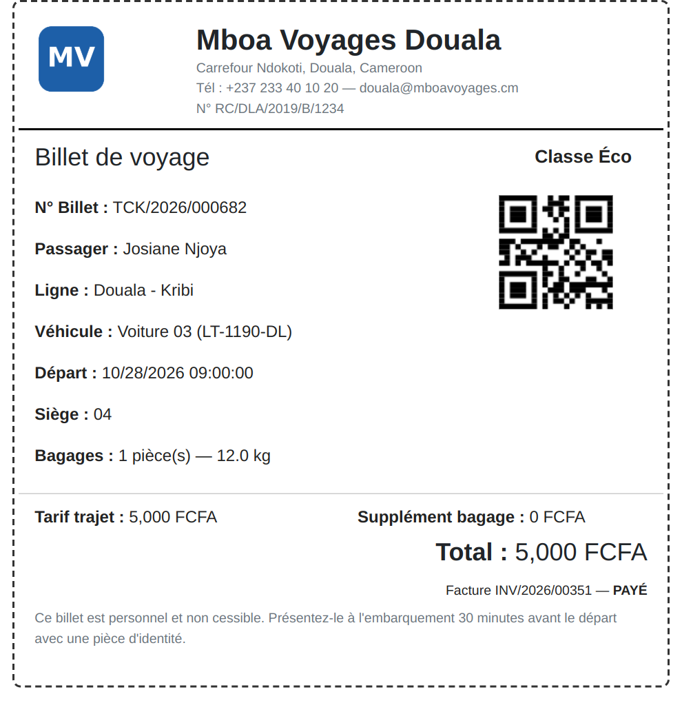
Billet de voyage avec logo de l’agence, QR code et statut de paiement
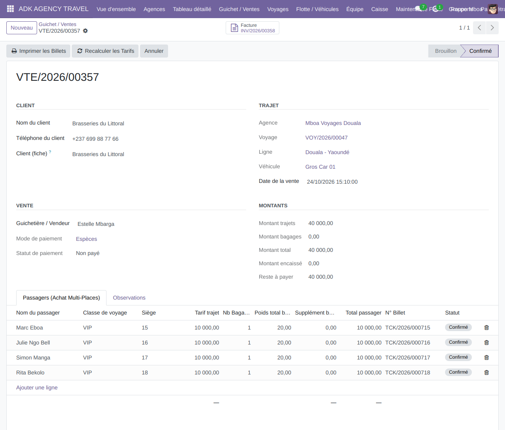
Vente à crédit : la facture reste à encaisser (reste à payer affiché)
ÉTAPE 8
Clôturez la caisse chaque jour
Dans Caisse → Clôtures de caisse, chaque guichetière clôture sa journée : le module affiche le montant encaissé attendu, la guichetière saisit le montant compté et l’écart ressort aussitôt. Une fois validée, la clôture est verrouillée et imprimable en PDF.
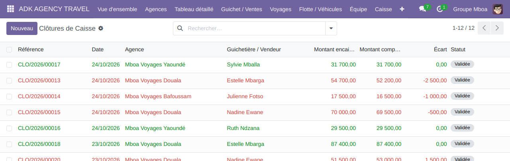
Clôtures de caisse avec écarts
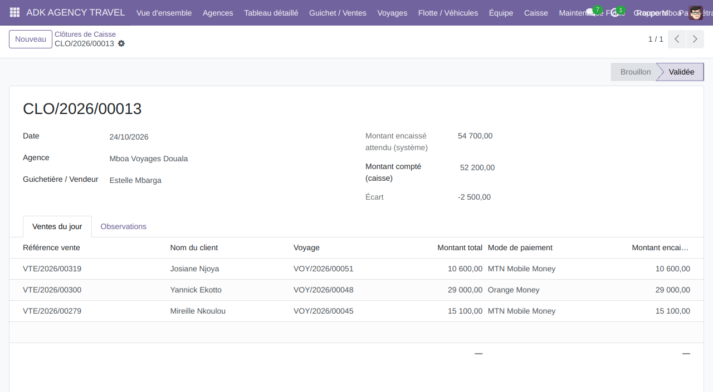
Clôture validée : ventes du jour, montant attendu, compté et écart
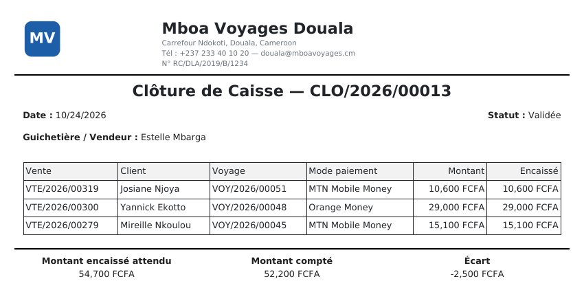
Rapport PDF de clôture de caisse
ÉTAPE 9
Suivez la maintenance de la flotte
Dans Maintenance Flotte, déclarez une panne, un entretien, une révision ou une réparation. Le véhicule passe automatiquement en panne ou en maintenance, puis redevient disponible quand l’intervention est terminée. Le coût et le garage sont enregistrés.
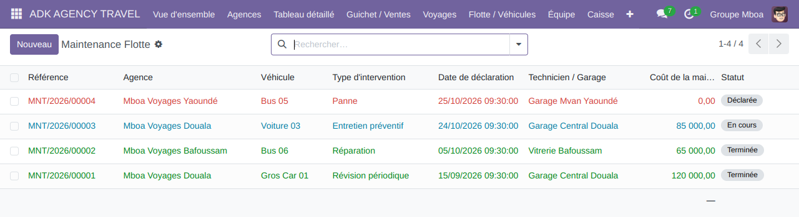
Interventions de maintenance
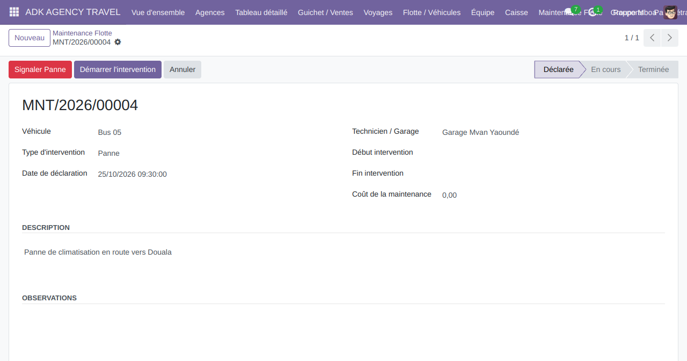
Panne déclarée sur un bus de la flotte
ÉTAPE 10
Analysez vos résultats avec les rapports
Le menu Rapports produit un rapport de rentabilité par ligne, par classe de voyage, par véhicule ou par agence, sur la période de votre choix, en PDF ou en Excel. Vous pouvez aussi afficher directement les ventes concernées.
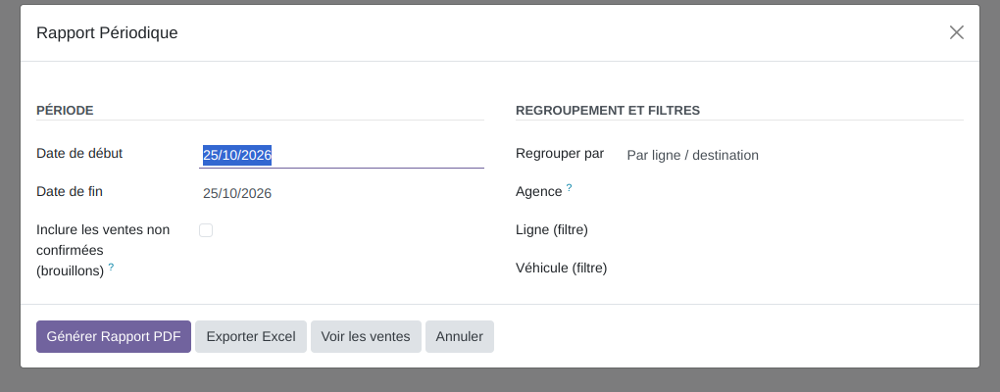
Assistant de rapport : période, regroupement, agence, filtres
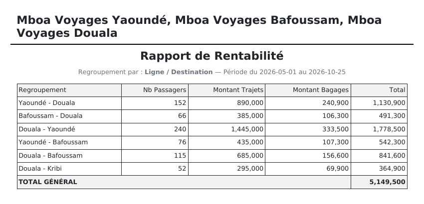
Rapport de rentabilité par ligne (PDF)
TABLEAU DE BORD
Un tableau de bord doux et complet
Dès que vous ouvrez ADK Agency Travel, une vue d’ensemble défilable montre toute votre activité : recettes, billets vendus, remplissage des bus, voyages, flotte, ventes à encaisser, performance de chaque agence et travail de chaque guichetière. Chaque carte est cliquable pour ouvrir le détail.
Taux de remplissageRecettesBillets vendusVoyagesVentes à encaisserActivité sur 6 moisRecettes par ligneClasses de voyageModes de paiementÉtat de la flotteProchains départsPerformance par agenceTravail des guichetières
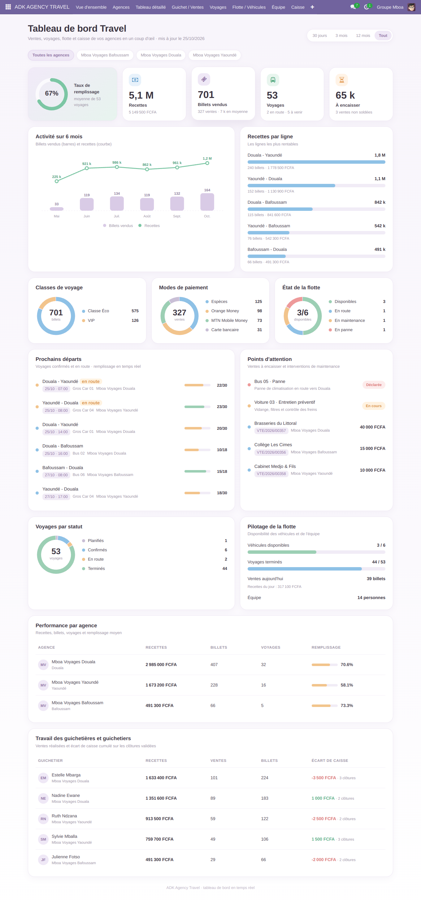
Vue d’ensemble : toutes les agences et toute l’activité sur une seule page
Filtrez par agence et par période
Un clic pour isoler une agence, puis 30 jours, 3 mois, 12 mois ou tout l’historique.
Cliquez pour approfondir
Chaque indicateur, graphique ou ligne ouvre la liste ou la fiche correspondante : voyage, vente, véhicule, intervention.
Surveillez l’essentiel
Prochains départs avec remplissage, ventes à encaisser, pannes en cours et écarts de caisse de chaque guichetière.
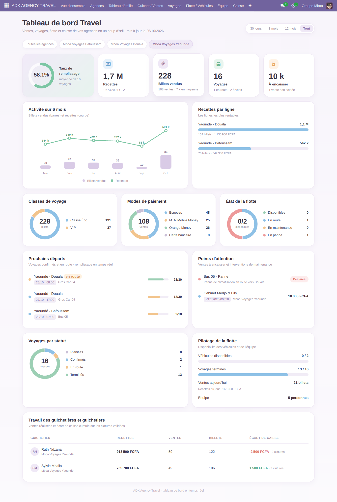
Même tableau de bord filtré sur l’agence de Yaoundé
Rôles et droits d’accès
🎫
Guichetière / Guichetier
Enregistre les clients, vend et confirme les billets, les imprime. Ne voit que son agence, n’a pas besoin de droits comptables et ne peut rien supprimer.
🧑💼
Chef d'agence
Cumule les droits du guichetier, gère l’équipe, la flotte, les voyages, les clôtures de caisse et les rapports de son agence, avec accès aux factures.
🛡️
Administrateur Agence
Crée et paramètre toutes les agences, voit l’ensemble du réseau et accède à tous les réglages du module.
🚌
Chauffeur
Consulte uniquement ses voyages et son véhicule.
🔧
Technicien / Suivi Maintenance
Déclare et suit les pannes, entretiens et réparations de la flotte.
Pourquoi ADK Agency Travel ?
🏢
Multi-agences
Chaque agence a son équipe, sa flotte, ses voyages, sa caisse et sa marque.
🧾
Zéro ressaisie comptable
Chaque vente confirmée génère sa facture et son paiement Odoo.
🔒
Billets sécurisés
Numérotés, avec QR code, au nom et au logo de votre agence.
💰
Caisse maîtrisée
Clôture journalière avec écart visible par guichetière.
🛠️
Flotte sous contrôle
Pannes, entretiens et disponibilité des véhicules en temps réel.
📊
Rapports PDF et Excel
Rentabilité par ligne, classe, véhicule ou agence.
À savoir
Les billets, rapports et tableaux de bord portent le nom, le logo et les coordonnées de votre agence : le nom du module n’apparaît jamais auprès de vos clients.
Le module Comptabilité d’Odoo est requis. Vérifiez que les rôles du module correspondent à l’organisation de votre équipe avant la mise en production.
Fiche technique
Version Odoo : 18.0 (Community et Enterprise)
Licence : LGPL-3, gratuit
Dépendances : base, mail, web, hr, account
Langue : interface en français
Installation : copier le dossier adk_travel dans vos addons, mettre à jour la liste des applications, puis installer ADK Agency Travel